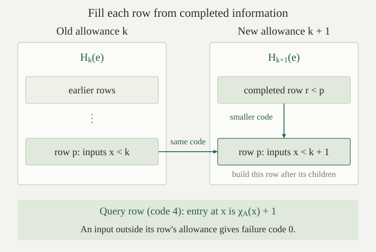

Use the finite oracle programs, their evaluation \(E_A(c,x)\), and the square pairing \(\langle a,b\rangle\). The oracle program code assigns \(\mathbf0,\mathbf S,\mathbf L,\mathbf R,\mathbf Q\) the numbers \(0,1,2,3,4\), respectively, and sets
The decoded oracle program \(c_e\) is obtained by inverting these rules, as justified next. Its indexed oracle evaluation is \(\varphi_e^A(x)\simeq E_A(c_e,x)\). Both \(c_e\) and its index \(e\) are fixed before choosing \(A\); the same query instruction receives different answers under different oracles. Equality \(\simeq\) is equality of partial values, including simultaneous divergence.
Every natural number is the code of exactly one oracle program. The numerical constructor operations are primitive recursive. Parameterized structural recursion on programs is primitive recursive whenever its defining operations are primitive recursive in the subcodes and their already computed answers.
Numbers below five select the five leaves. For \(e\ge5\), let \(t=e-5\). The remainder of \(t\) modulo four selects pairing, recursion, composition or search, in that order. In the first three cases, unpair \(\lfloor t/4\rfloor\) to obtain the two child codes; in the last case that quotient is the single child code. The pairing bounds put every child strictly below \(e\). Strong induction therefore defines the decoder. The remainder determines the outer constructor uniquely, and induction on the children proves both \(c_{\#c}=c\) and \(\#c_e=e\).
The displayed constructor formulas are primitive recursive by arithmetic and pairing. To perform structural recursion, retain a coded list of answers at all smaller indices. The current remainder identifies the rule; bounded lookup supplies its child answers. History recursion with parameters gives the asserted primitive-recursiveness result. Embedding an ordinary program preserves its syntax and evaluation, but adding the new leaf changes the numerical constructor formulas: ordinary indices are not silently reused.
The bounded oracle evaluator \(B_k^A(c,x)\) returns an optional natural number. Put \(B_0^A(c,x)=\operatorname{none}\). At allowance \(k+1\), first reject every input \(x>k\). At the remaining inputs, ordinary leaves return their usual values and the query leaf returns \(\operatorname{some}(\chi_A(x))\). Pairing and composition use their proper subprograms at allowance \(k+1\), in the specified strict order; a failed required call makes the result \(\operatorname{none}\).
For recursion, the zero case uses \(B_{k+1}^A(c,a)\). At a successor input \(\langle a,n+1\rangle\), first obtain \(v\) from \(B_k^A(\operatorname{prec}(c,d),\langle a,n\rangle)\), then use \(B_{k+1}^A(d,\langle a,\langle n,v\rangle\rangle)\). Failure of either call is failure of the whole calculation.
For search at \(\langle a,m\rangle\), inspect \(B_{k+1}^A(c,\langle a,m\rangle)\). A zero returns \(m\); a defined positive value continues with \(B_k^A(\operatorname{find}'(c),\langle a,m+1\rangle)\); failure returns failure. Thus the answer is the absolute stopping index, and an unsuccessful earlier test cannot be skipped.
Every recursive call decreases the allowance or keeps it and passes to a proper subprogram. This lexicographic decrease makes the calculation terminate. Every call repeats its own input check, including composition's intermediate inputs. The numerical bounded value is
A successful output zero is encoded by one. The allowance bounds admissible inputs and recursive calls, not the numerical output.
For all \(A,c,x,y,k,j\), a successful bounded result is sound and remains successful at larger allowances:
For soundness and one-step increase of the allowance, induct on the allowance and then on the finite program. A successful leaf gives its prescribed value, including the actual answer \(\chi_A(x)\) at a query. Pairing and composition supply exactly their required child outputs. Recursion supplies its earlier value and next step; search supplies either its current zero or a positive test followed by the next search. These are the successful-evaluation rules. Enlarging the allowance preserves the input guard and all successful child calls by the induction hypotheses. Iterating proves the displayed monotonicity.
For completeness, induct on a finite successful derivation. Leaves succeed once the allowance exceeds their input. Pairing and composition use finitely many child successes; enlarge their allowances to a common maximum and beyond every input used. At recursion, proceed along its finite value chain, adding one unit for each previous-value call at the same program. At search, start from its final zero test and work backwards through the finitely many positive tests, adding one unit whenever the same search program is called again. Monotonicity preserves successes already obtained. This gives one sufficient allowance for the entire derivation. Conversely, soundness prevents any allowance from producing an output when evaluation is undefined.
Consider a fixed finite expression built from ordinary primitive-recursive initial functions, one formal unary function symbol \(q\), composition and primitive recursion. There is one oracle program that, for every \(A\), computes the expression with \(q\) interpreted as \(\chi_A\), after a fixed primitive-recursive packing of any finite tuple of inputs. This program is total for every oracle.
Induct on the expression itself, before choosing an interpretation of \(q\). Ordinary initial functions have fixed query-free programs; the formal symbol is represented by \(\mathbf Q\). At composition, combine the previously constructed programs by strict pairing and composition. At primitive recursion, use \(\operatorname{prec}\), preceded and followed by the tuple rearrangements from the finite-arity compiler. Those rearrangements use only pairing, projections and zero and hence are independent of \(A\). The same induction proves the semantic identity simultaneously for every interpretation \(q=\chi_A\). Totality follows because all generators are total and composition and primitive recursion preserve totality.
Coded bounded loops and history recursion are available in this argument through their actual primitive-recursive constructions on finite lists, not as additional instructions. A loop carries its coded accumulator through primitive recursion; a lookup first checks the requested index and then uses bounded list access. Replacing each occurrence of the formal symbol by \(\mathbf Q\) produces one finite tree. Choosing a new tree separately for each oracle would give a weaker conclusion than this construction.
There is one fixed oracle program \(\mathsf b\), chosen independently of \(A\), such that
Fix a maximum code \(e\) as a numerical parameter. At allowance \(k\), retain the finite table \(H_k(e)\) whose row \(p\le e\) is
At \(k=0\), each row is empty. To pass from \(H_k(e)\) to \(H_{k+1}(e)\), construct rows in increasing code order \(p=0,\ldots,e\), and in each row construct the \(k+1\) entries with inputs \(0,\ldots,k\). A call to a proper subprogram uses its already completed row in the current table. A call at the same program uses its row in \(H_k(e)\). In either lookup, an input outside the row's allowance returns zero, implementing the guard at that call.
For example, a recursion successor first looks in the old row for its preceding value. If the entry is zero, write zero. Otherwise subtract one to obtain \(v\), form \(\langle a,\langle n,v\rangle\rangle\), and look in the current row for the proper step subprogram. Search first looks in its test subprogram's current row. Zero means failure; entry one means a semantic zero, so write \(m+1\); an entry greater than one directs the lookup to the old search row at \(\langle a,m+1\rangle\). These are precisely the defining bounded clauses. The query row writes \(\chi_A(x)+1\), using one call to the formal function \(q(x)\).
Induction on \(k\), then on \(p\), proves that every constructed entry has its asserted value. The bound on child codes from justifies every current-table dependency. Encoded lists, arithmetic, case tests and guarded lookup are ordinary primitive recursive. The inner input loop, code loop and outer allowance loop are primitive recursions on coded finite accumulators; their bounds are numerical parameters, and their output entries may be arbitrarily large. Thus this is one fixed finite primitive-recursive construction with the formal symbol \(q\). Apply and finally look up row \(e\), returning zero when \(x\ge k\). This gives the same program \(\mathsf b\) for all oracles and all numerical parameters.

There is one oracle program \(\mathsf u\) such that
Every unary partial function computable relative to \(A\) is some \(\varphi_e^A\). The program \(\mathsf u\) is selected before the oracle; only its query answers change.
On input \(\langle e,x\rangle\), search allowances \(k=0,1,2,\ldots\) for \(b^A(k,e,x)>0\). Each test terminates by . The test is one fixed oracle program: rearrange its input, run \(\mathsf b\), and apply the ordinary zero test, which returns zero exactly on a positive bounded value. Start \(\operatorname{find}'\) at zero. Retain the original \(e,x\); when the search returns \(k\), run \(\mathsf b\) at those parameters and return its value minus one. Pairing, composition, the query-free rearrangements and this one search construct a finite \(\mathsf u\) independently of \(A\).
If evaluation has value \(y\), supplies a successful allowance, so the search terminates, and soundness gives the same \(y\). If evaluation has no value, every allowance fails, so the search has no zero test and diverges. Finally, relative computability means evaluation of some finite oracle program; its code supplies the required index. This proves both the exact partial-value identity and exhaustion of the relative class.
Compare \(\exists\mathsf u\,\forall A,e,x\) in the preceding theorem with \(\forall A\,\exists\mathsf u_A\,\forall e,x\). Does the latter quantifier order by itself provide one finite simulator that can be run with different oracles?
No. Separate existence allows the finite program text to depend on the whole set \(A\), without providing any way to obtain it or reuse it when the oracle changes. The asserted theorem supplies the same syntax \(\mathsf u\) for all oracles. In its construction, table operations and the allowance search are fixed, and only calls to \(\mathbf Q\) obtain oracle-dependent values.
For example, the code four always denotes \(\mathbf Q\): the same evaluator at \(\langle4,x\rangle\) returns \(\chi_A(x)\) for each \(A\). The numerical pair \(\langle4,x\rangle\) and the evaluator's finite text need no description of all of \(A\).
The constant program is \(\mathsf{const}(0)=\mathbf0\) and \(\mathsf{const}(a+1)=\operatorname{comp}(\mathbf S,\mathsf{const}(a))\). The identity program is \(\mathsf{id}=\operatorname{pair}(\mathbf L,\mathbf R)\). For every \(A,a,x\),
Induction on \(a\) proves the first equation. The inverse pairing identity proves the second. Both programs contain no query leaves. The numerical code of \(\mathsf{const}(a)\) is primitive recursive by its displayed recurrence and the numerical composition constructor.
Define the specified numerical map
The function \(s\) is ordinary primitive recursive, independent of the oracle, and satisfies
The inner program always returns \(\langle a,x\rangle\). Strict composition then runs exactly \(c_e\) on that input, using whichever oracle is supplied. This establishes equality even when the outer computation diverges. Numerically, the code of the resulting tree is obtained from \(e\), the primitive-recursive constant-code function and the fixed identity code by the numerical pairing and composition constructors. No decoder needs to be executed by the parameter map, and no oracle call occurs while building this text. These operations prove ordinary primitive recursiveness of the specified \(s\).
For fixed arities \(m,n\), the same result inserts an \(m\)-tuple before an \(n\)-tuple represented by the list code. Use a fixed query-free program for coded concatenation, specialize it to the code of the fixed tuple, and compose with \(c_e\). Fixed-arity list formation is primitive recursive. Thus there is an ordinary primitive-recursive map \(s_{m,n}\) with
The construction includes empty tuples: their list code is supplied by the same total list operations. All these maps are chosen independently of \(A\).
Let \(e=\#\operatorname{comp}(\mathbf Q,\mathbf L)\). What does \(\varphi_{s(e,a)}^A(x)\) compute? Can \(s(e,a)\) be calculated without knowing whether \(a\in A\)?
The specialized program forms \(\langle a,x\rangle\), extracts its left coordinate \(a\), and queries that number. It therefore returns \(\chi_A(a)\) on every input \(x\). Its numerical index is obtained by the ordinary primitive-recursive function \(s\), with no membership question answered during construction.
Producing the finite program and running it are different calculations. Replacing \(\mathbf Q\) by any potentially divergent outer program would still give a defined numerical index; its execution could then diverge. The parameter theorem preserves that partial behavior too.
For a fixed oracle \(A\), a set \(S\subseteq\mathbb N\) is computably enumerable relative to \(A\), or \(A\)-c.e., if it is the domain of an oracle program under \(A\). Write
Every \(A\)-c.e. set is some \(W_e^A\) by the coding bijection. A set is decidable relative to \(A\), or \(A\)-computable, if an oracle program computes its total zero-one characteristic function. A relation is treated as a set of its paired or finite-tuple inputs. Outside an \(A\)-c.e. set, its recognizing computation may run forever.
An \(A\)-primitive-recursive function is one obtained from the ordinary initial functions and \(\chi_A\) by a finite number of compositions and primitive recursions. An \(A\)-primitive-recursive relation has such a zero-one characteristic function. These functions are total and have oracle programs by ; the chosen finite construction determines a program that also works under every other oracle with its symbol interpreted there.
For every oracle \(A\) and set \(S\subseteq\mathbb N\), the following are equivalent: \(S\) is \(A\)-c.e.; there is an \(A\)-primitive-recursive relation \(R(x,t)\) such that \(x\in S\Longleftrightarrow\exists t\,R(x,t)\); there is an \(A\)-decidable relation with that property. In particular, the fixed bounded evaluator supplies
If \(S=W_e^A\), take \(R(x,k)\) to mean \(b^A(k,e,x)>0\). The finite-table construction is primitive recursive with the oracle characteristic function as a generator, so its positivity test is \(A\)-primitive recursive. gives the exact domain and output equivalences. Such a test is total \(A\)-computable by the uniform construction lemma.
Conversely, let a fixed oracle program decide \(R(x,t)\), returning its characteristic bit. To recognize \(\exists t\,R(x,t)\), search \(t=0,1,\ldots\), applying the ordinary zero test to that bit so the search returns on a true instance. Every test finishes because the relation is decidable relative to \(A\). The resulting oracle program halts exactly when a witness exists; if none exists, all tests are positive and it runs forever. This proves all implications, including the empty-set case.
The word “relative” is essential: checking the resource certificate may ask membership questions of \(A\). The theorem does not supply an ordinary decidable checker for every noncomputable oracle.
The query program always terminates. For every oracle \(A\), must the test \(b^A(k,4,x)=2\) be decidable by an ordinary program, uniformly in its two numerical inputs?
No. At \(k=x+1\), the input passes the guard and the bounded query returns its actual answer, so
An ordinary decision procedure for this relation would decide \(A\) by the displayed substitution. Choosing any noncomputable \(A\), such as the ordinary halting set, rules that out. The relative checker terminates because it has permission to query \(A\), not because those answers became ordinarily computable.
There is one fixed oracle program \(\mathsf r\) that, on input \(\langle e,\langle d,x\rangle\rangle\), halts exactly when at least one of \(\varphi_e^A(x)\) and \(\varphi_d^A(x)\) halts. It returns one if the first bounded value is positive at the least successful allowance, and zero otherwise. This same program works for every \(A,e,d,x\).
Search for the least \(k\) at which \(b^A(k,e,x)>0\) or \(b^A(k,d,x)>0\). Both bounded calculations terminate. Their disjunction is a total oracle test formed from two calls to the fixed \(\mathsf b\), ordinary Boolean operations and the query-free rearrangements of the input. Thus one \(\operatorname{find}'\) program performs this allowance search while retaining \(e,d,x\).
At a successful allowance return the bit for \(b^A(k,e,x)>0\); a simultaneous success is assigned to the first program. This is a fixed total output calculation after the search. Bounded soundness ensures that any selected success comes from a real halting computation. If either computation halts, bounded completeness gives a successful allowance; if neither halts, none exists. These facts prove the specified behavior of \(\mathsf r\). Waiting for the first unbounded recognizer to finish before running the second would not establish this result.
For every oracle \(A\) and set \(S\subseteq\mathbb N\),
If a total oracle program computes \(\chi_S\), recognizing either bit is a sequential search whose test repeats the computed bit and stops exactly when that bit has the required value. More explicitly, to recognize \(S\), search on the ordinary zero test of \(\chi_S(x)\), independent of the search variable; to recognize its complement, search on \(\chi_S(x)\) itself. Their domains are exactly the two sides.
Conversely choose indices \(e,d\) for the domains \(S\) and its complement. Run the fixed race \(\mathsf r\) with those two indices. Exactly one recognizer halts on each input, so the race always terminates, returns one on \(S\), and returns zero outside \(S\). Parameter insertion and the ordinary tuple rearrangements give a program with only \(x\) left as input. It computes the total characteristic function, proving relative decidability.